06Die Beigaben
Der Feedfür Instagram.
Beiträge für Instagram mit Ihren Bildern und im Ton des Restaurants, vorab als Handy-Vorschau. Am Beispiel von Maloja, einem Restaurant in einem Kontor der Speicherstadt.
20:12
M
maloja.hamburgSchweizer und norddeutsche Küche im Kontor. Speicherstadt Hamburg.
BeiträgeVorlagen
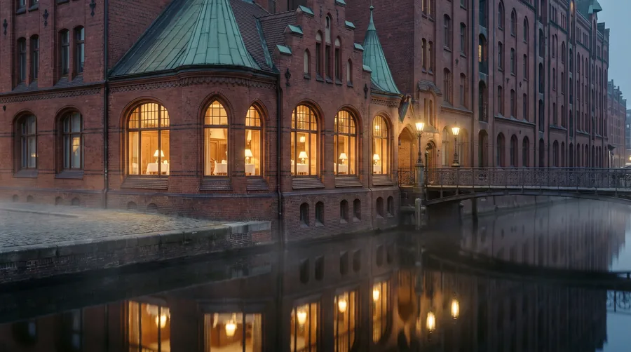
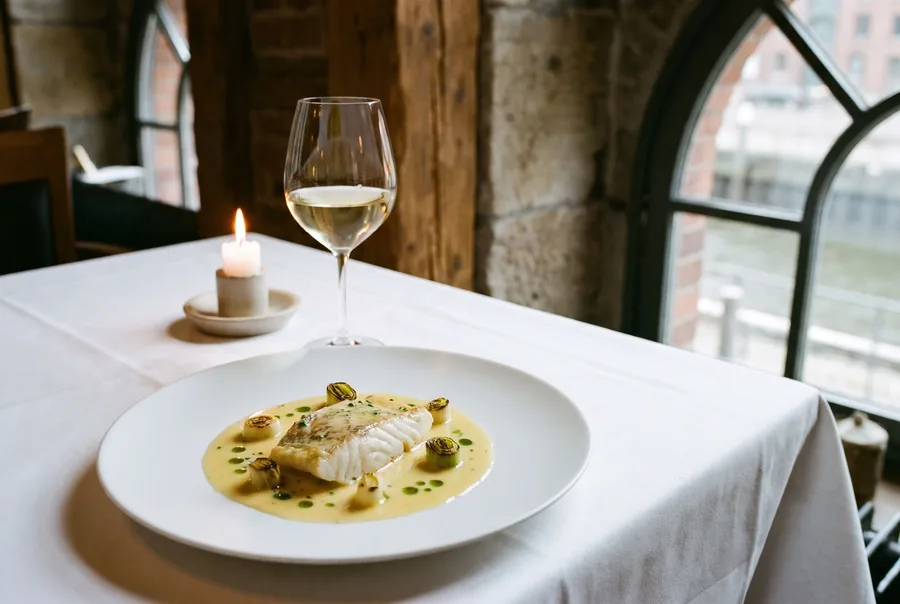
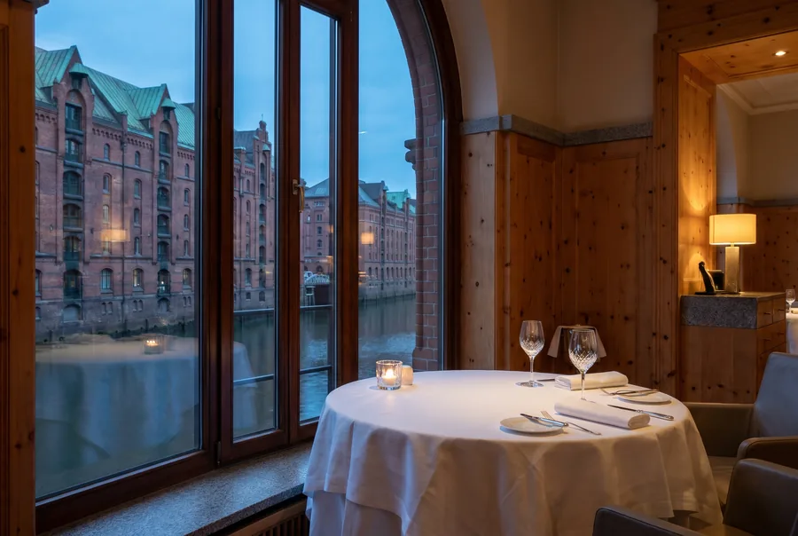
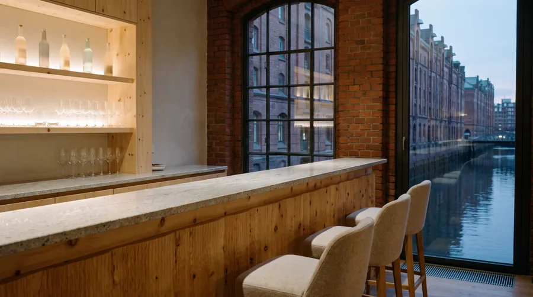
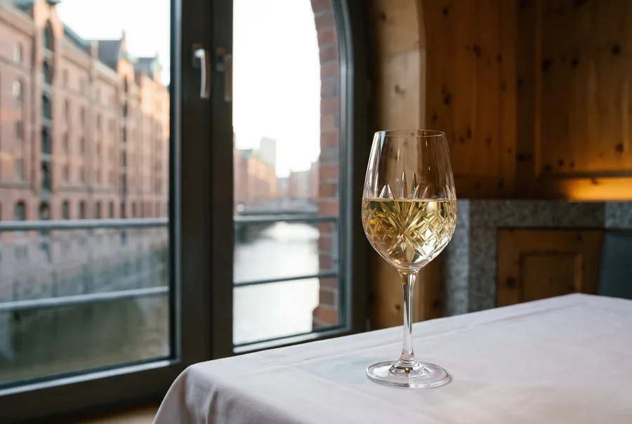

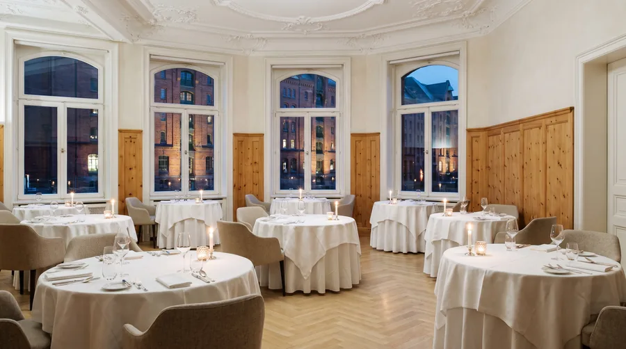
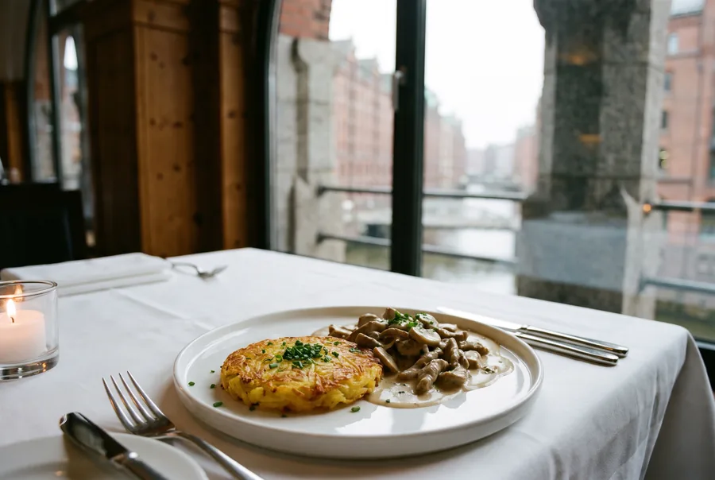
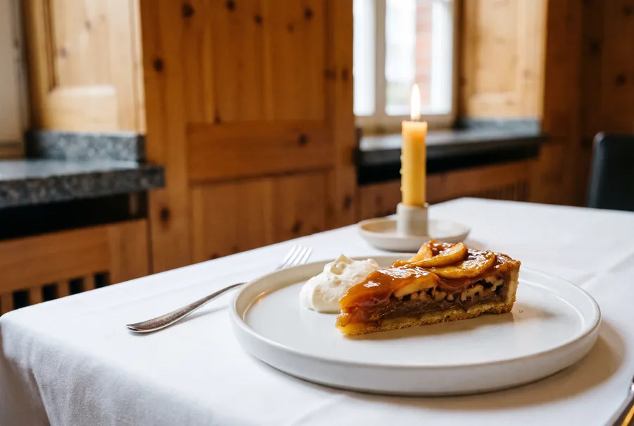
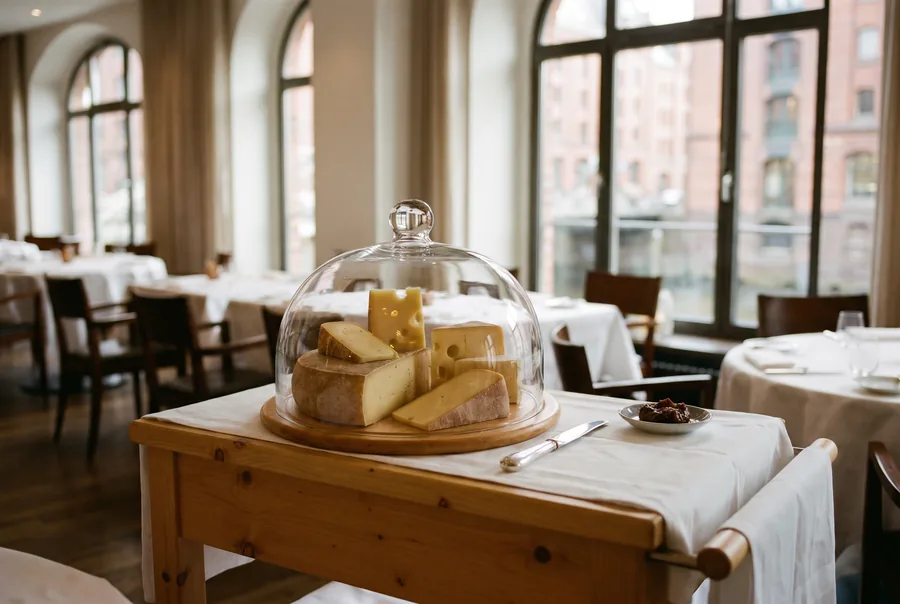

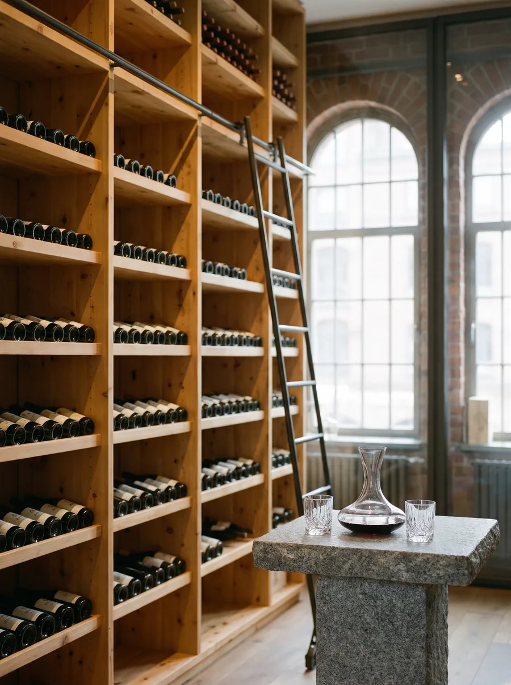

Mmaloja.hamburg···
Mmaloja.hamburg···
Mmaloja.hamburg···
Mmaloja.hamburg···
01Das Profil
Das Restaurantauf Instagram.
Das Profil von Maloja mit den Fotos des Restaurants, im Ton seiner Karte.
Handy-Vorschau
20:12
M
maloja.hamburgSchweizer und norddeutsche Küche im Kontor. Speicherstadt Hamburg.
BeiträgeVorlagen
02Die Beiträge
Die erstenBeiträge.
Jeder Beitrag 1080 × 1350, mit den Fotos des Restaurants.
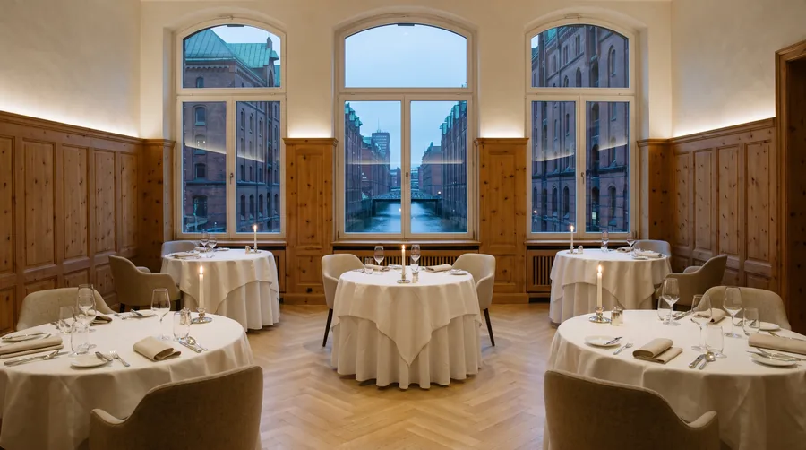
Dazu gehören Unterlagen und der Materialordner, im selben Stil wie alles andere.
Ein erstes Gespräch
Ihr Restaurant,Ihre Werkzeuge.
Jedes Werkzeug bauen wir für Ihr Restaurant: mit Ihren Karten, Ihren Menüs, Ihrem Ton. Erzählen Sie uns, womit Ihr Team heute arbeitet.